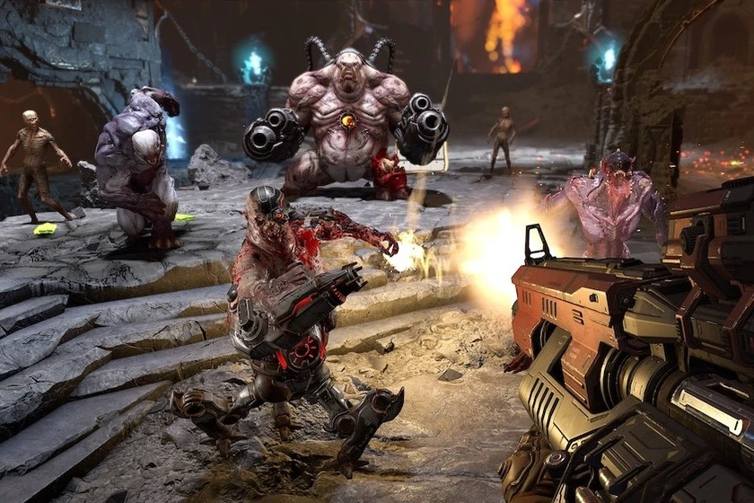
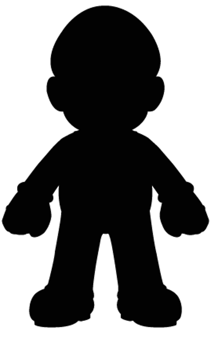
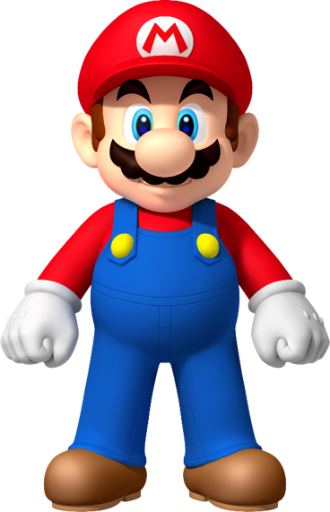
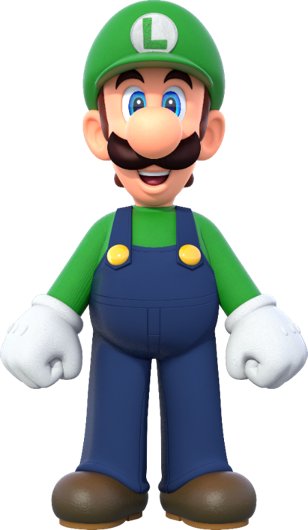
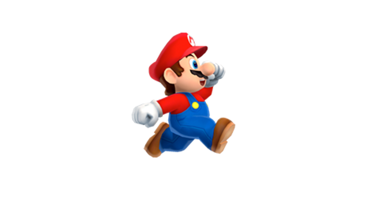
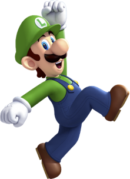
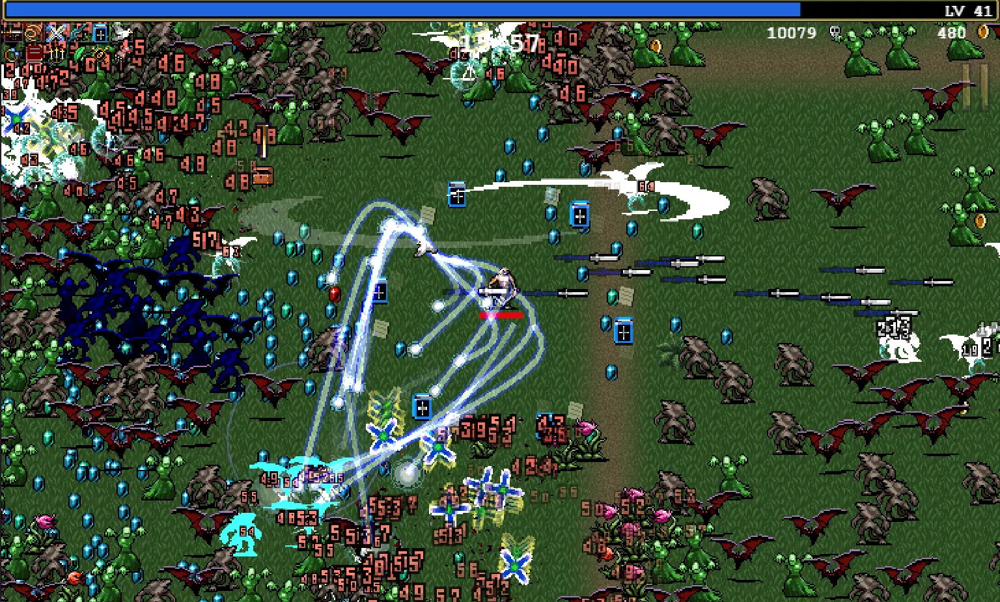
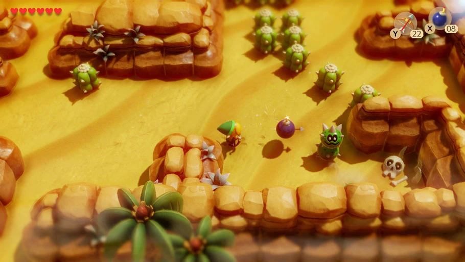

Pensar en objetos
Programación Orientada a Objetos: clases, objetos y los cuatro pilares, con ejemplos de videojuegos. La base para llenar la pantalla de enemigos.
“Un juego no es una lista de variables. Es un mundo lleno de cosas que saben lo que son y lo que pueden hacer.”
Una pantalla llena de enemigos

- Cada enemigo tiene su propia vida, su posición y su velocidad
- Todos se mueven y todos pueden recibir daño
El caso: un RPG con tres tipos de enemigo
El diseño del juego pide un goblin, un orco y un dragón. Cada uno tiene vida y velocidad, se mueve y recibe daño.
| Enemigo | Vida | Velocidad |
|---|---|---|
| Goblin | 30 | 80 |
| Orco | 120 | 50 |
| Dragón | 500 | 40 |
Primer intento: variables sueltas
var vida_goblin = 30 var velocidad_goblin = 80 var vida_orco = 120 var velocidad_orco = 50 var vida_dragon = 500 var velocidad_dragon = 40 func danar_goblin(cantidad): ... func danar_orco(cantidad): ... func danar_dragon(cantidad): ...
Los problemas aparecen enseguida
- No escala: el diseño pide un segundo goblin y hacen falta
vida_goblin_2,velocidad_goblin_2y otra función - Se duplica: la misma lógica de daño queda escrita tres veces. Un arreglo hay que repetirlo tres veces
- Se mezcla: nada indica qué variable pertenece a qué enemigo. Con cien enemigos son doscientas variables
Dibujar un plano, construir cien casas
Un arquitecto no dibuja cada casa de un barrio: dibuja un plano, y con ese plano se construyen todas.
- El plano dice qué tiene una casa: paredes, techo, puerta, ventanas
- El plano no es una casa: nadie puede vivir en él
- Cada casa construida es distinta de las demás: otro color, otros dueños
Lo mismo, en un videojuego
| En la construcción | En el juego |
|---|---|
| El plano de la casa | El plano de un Goomba |
| Dice qué tiene: paredes, techo, puerta | Dice qué tiene: vida, velocidad, caminar, ser pisado |
| Cada casa construida | Cada Goomba del nivel |
| Otro color, otros dueños | Otra posición, otro estado |
En programación: clases y objetos
Clase
Es el plano. Se escribe una sola vez y dice qué datos y qué comportamientos tiene todo lo que se construya con él.
Objeto
Es cada cosa construida con ese plano. Puede haber uno, cuarenta o mil, cada uno con sus propios valores.
Siguiendo con el ejemplo: se escribe la clase Goomba, y el nivel tiene cuarenta objetos Goomba sin reescribir el código.
Un objeto: una abstracción de un elemento del juego
Un objeto es la representación, dentro del programa, de un elemento del juego. Reúne en un solo lugar su estado (lo que sabe) y su comportamiento (lo que puede hacer).
Lo que sabe · propiedades
nombrecolorvidasaltura_salto

Lo que puede hacer · métodos
caminar()saltar()agacharse()recibir_dano()
La misma silueta, dos personajes
color: rojo
vidas: 3
altura_salto: 4

color: verde
vidas: 3
altura_salto: 5

Mario y Luigi © Nintendo.
El mismo método, cada uno con sus valores

mario.saltar()
# altura_salto = 4

luigi.saltar()
# altura_salto = 5
saltar()se escribe una sola vez, en la clase- Los dos personajes lo usan de la misma forma
- Luigi llega más alto porque su
altura_saltovale más
Mario y Luigi © Nintendo.
¿Qué objetos ya existen en el curso?
De lo construido en las semanas 1 y 2: ¿qué elementos son objetos? ¿Qué propiedades y qué comportamientos tiene cada uno?
El jugador
Sabe: puntos, velocity
Puede: sumar_punto(), move_and_slide()
La moneda
Sabe: su posición y su forma de colisión
Puede: preguntar is_in_group(), pedir sumar_punto() y eliminarse
Una clase, muchos objetos
Clase Slime · propiedades
vida: int velocidad: float color: Color
Métodos · lo que sabe hacer
perseguir() recibir_dano()
En Godot: ¿qué es la clase y qué es el objeto?
| En POO | En Godot | Ejemplo |
|---|---|---|
| Clase (el plano) | Un script .gd | enemigo.gd: vida, recibir_dano() |
| Molde completo | Una escena .tscn: nodos + script | slime.tscn: sprite, colisión y enemigo.gd |
| Objeto (instancia) | Cada copia de la escena dentro del juego | los 50 slimes que persiguen al jugador |
moneda.tscn era el molde, y cada Ctrl+D creaba un objeto nuevo. En la próxima clase los objetos se crean por código, mientras el juego corre: eso es instanciar.¿Qué clases tiene este juego?

| Clase | Sabe… | Puede… |
|---|---|---|
| Jugador | vida, velocidad | moverse, recibir daño |
| Enemigo | vida, velocidad, daño | perseguir, morir |
| Proyectil | dirección, velocidad | avanzar, golpear |
| Gema | experiencia | ser recogida |
| Spawner | cada cuánto, qué crea | crear enemigos |
Los cuatro pilares de la POO
1 · Abstracción
De cada elemento del juego se conserva solo lo que el juego necesita. El resto queda afuera.
2 · Encapsulamiento
Cada objeto cuida sus propios datos. Los demás le piden cosas, sin saber cómo funciona por dentro.
3 · Herencia
Una clase arranca con todo lo de otra y le suma lo suyo. Slime es un Enemigo.
4 · Polimorfismo
El mismo pedido a objetos distintos da respuestas distintas. Cada enemigo responde a su manera.
Abstraer: quedarse con lo que el juego necesita
Un fontanero real tiene edad, peso, familia y comida preferida. Al juego no le importa nada de eso. De todo lo que Mario podría ser, el juego conserva lo que usa.
Se conserva
Posición, vidas, tamaño.
Caminar, saltar, agacharse, recibir daño.
Se descarta
Edad, peso, familia.
Qué desayunó, dónde vive, cuánto gana.
Tres armas, un solo pedido

Link tiene tres formas de atacar: espada, flecha y bomba. Las tres hacen lo mismo: le piden al enemigo recibir_dano(cantidad).
- Ninguna conoce la vida del enemigo ni decide si muere
- El enemigo resta, revisa si llegó a cero y resuelve qué pasa: parpadea, suelta un objeto, desaparece
Cada objeto cuida sus datos
Modificar desde afuera
# desde la bala: enemigo.vida = enemigo.vida - 10 # ¿y si llega a 0? ¿quién lo mata? # ¿y si tenía escudo?
Pedir
# desde la bala: enemigo.recibir_dano(10) # el enemigo decide qué hacer
La vida es asunto del enemigo. Si todos le piden recibir_dano(), las reglas (escudo, muerte, sonido, parpadeo) viven en un solo lugar.
| Se usó así… | …sin saber que por dentro |
|---|---|
move_and_slide() | calcula choques, pendientes y deslizamientos |
queue_free() | espera al final del frame y libera la memoria |
jugador.sumar_punto() | la moneda no sabe si suma, suena o festeja |
“Es un”: la clase hija arranca con todo lo de la madre
- Lo común se escribe una vez, en la clase base: todos persiguen, todos reciben daño
- Cada hija suma solo lo que la hace distinta
- Un arreglo en
Enemigoarregla a los tres
Dos palabras: class_name y extends
# enemigo.gd ← la clase base class_name Enemigo extends Area2D var vida = 3 var velocidad = 60 func recibir_dano(cantidad): vida -= cantidad if vida <= 0: morir() func morir(): queue_free()
# slime_elite.gd ← una hija extends Enemigo func _ready(): vida = 10 # cambia un valor heredado velocidad = 35 func morir(): # reescribe un método print("¡Cayó el élite!") super() # y además hace lo de la madre
class_name: le pone nombre a la clase, para poder heredarlaextends: “esta clase es un…”super(): “hacer también lo que hacía la madre”
Cada extends escrito hasta hoy era herencia
Por eso un CharacterBody2D tiene position (lo heredó de Node2D) y _ready() (lo heredó de Node), aunque nadie los escribió.
extends CharacterBody2D, heredó cinco generaciones de código de Godot y le sumó sumar_punto().En el Inspector se ve: las propiedades están agrupadas por la clase de la que vienen.
La misma acción, resultados distintos
Super Mario Bros.: Mario cerca de
un Goomba, un Koopa y un bloque
Mario hace siempre lo mismo: pisar. Lo que cambia es quién recibe el pisotón.
| Recibe el pisotón | Responde |
|---|---|
| Goomba | se aplasta y desaparece |
| Koopa | se mete en el caparazón |
| Bloque (golpeado desde abajo) | se rompe o suelta una moneda |
El mismo pedido, respuestas distintas
# La bala no sabe qué enemigo tocó. # Solo sabe que es un Enemigo: func _on_area_entered(area): if area is Enemigo: area.recibir_dano(1) # Y cada uno responde a su manera: # Slime → se divide en dos # Murciélago → sale volando # Jefe → se enoja y acelera
Es el pisotón de Mario, en código: la bala pide siempre recibir_dano() y cada objeto hace lo suyo. Quien pide no necesita saber con qué tipo exacto habla.
if por cada tipo de enemigo, y habría que modificarla cada vez que se agrega uno nuevo.Funciona gracias a la herencia: todas las clases hijas de Enemigo tienen recibir_dano().
“Es un” se hereda · “tiene un” se agrega como nodo
Herencia (script)
Para lo que el objeto es.
SlimeElite extends Enemigo Enemigo extends Area2D
Composición (nodos hijos)
Para lo que el objeto tiene.
Slime ├── AnimatedSprite2D # tiene un dibujo ├── CollisionShape2D # tiene una forma ├── Hitbox (Area2D) # tiene una zona de daño └── BarraVida # tiene una barra
extends.Un survivors: qué hay en el juego
- Un caballero que se mueve por una arena
- Slimes que aparecen por los bordes y lo persiguen
- Un arma que dispara automáticamente al slime más cercano
- Balas que avanzan y golpean
- Cada tanto, un slime élite: más lento, más resistente, con barra de vida
- Algo que crea los slimes cada cierto tiempo
Diseñar las clases del juego del curso
Con los elementos del juego recién presentados (caballero, slimes, arma, balas, élite y lo que crea los slimes), diseñar en papel:
- ¿Qué clases hacen falta?
- Para cada una: ¿qué sabe? ¿qué puede hacer?
- ¿Hay alguna que sea un tipo de otra? Dibujar el árbol
- ¿Cómo se relacionan los objetos entre sí? ¿Qué mensajes se envían?
Pistas
- Son alrededor de cinco clases
- El élite y el slime común se parecen mucho…
- ¿El que crea los slimes es un objeto también?
- Anotar los métodos como verbos:
perseguir(),disparar()
Una solución posible
| Clase | Sabe | Puede |
|---|---|---|
| Jugador | vida, velocidad | moverse, recibir_dano() |
| Arma | cadencia | buscar al más cercano, disparar |
| Bala | dirección, velocidad | avanzar, pedir daño al enemigo |
| Spawner | cada cuánto, cuántos van | crear slimes en los bordes |
recibir_dano() del enemigo; el enemigo llama a recibir_dano() del jugador. Llamar a un método de otro objeto es enviarle un mensaje; nadie modifica la vida de otro.Resumen de la clase
| Concepto | En una frase |
|---|---|
| Objeto | La representación de un elemento del juego: estado + comportamiento |
| Clase | El plano; cada objeto es una instancia con sus propios valores |
| Abstracción | Conservar de cada elemento solo lo que el juego necesita |
| Encapsulamiento | A un objeto se le pide; se usa sin saber cómo funciona por dentro |
| Herencia | “Es un”: la hija arranca con todo lo de la madre (extends) |
| Polimorfismo | El mismo pedido, respuestas distintas |
extends, “tiene un” con nodos hijos.Próxima clase: la horda
Clase 5+ · en vivo
- La clase base
Enemigoy el slime que persigue preload()einstantiate(): crear objetos mientras el juego corre- Un
Timerque spawnea slimes por los bordes - El élite, que hereda de
Enemigo
Para traer
- El diseño del ejercicio, en papel o foto
- Pensar: ¿cómo sabe el slime dónde está el jugador para perseguirlo?
Logo y mascota de Godot © Godot Foundation — CC BY 4.0.